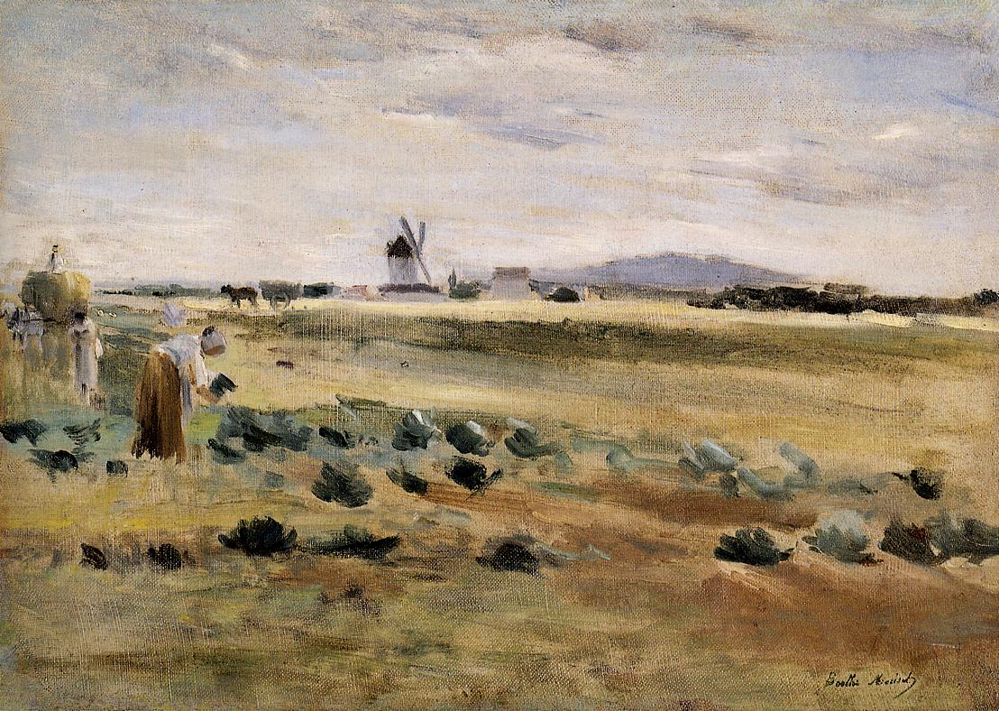

Tags: houses-and-buildings, mills-and-windmills
Style: Impressionism
Artist: Morisot Berthe
Title: The Little Windmill at Gennevilliers
Year: 1875
Genre: landscape
Categories: bustard (16.6%); bison (15.7%); hyena (10.2%); gazelle (5.6%); white_stork (5.0%)